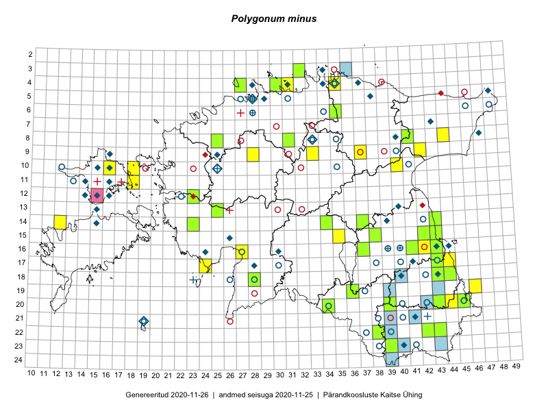

Polygonum minus — väike kirburohi
Kaardile koondatud taksonid: Polygonum minus Huds. (60)

Kaart põhineb 60 kirjel, neist:
vaatlusi 23
eksemplare 37
Kaasaegsed1 leiukohad asuvad 47 ruudus.
Andmed “Eesti taimede levikuatlasest”,2 sulgudes ruutude arv:3
● 1971–2005 (45)
○ 1921–1970 (44)
△ kuni 1920 (5)
+ hävinud (0)
? kaheldav (0)
Lisaruudud teistest andmebaasidest:4
ELF: 2006– . . . (10)
PKÜ: 2006– . . . (0)
ELF: 1971–2005 (2)
PKÜ: 1997–2005 (1)
| Ruut | Vaatleja(d) | Vaatlusaeg | Kirje PlutoFis |
|---|---|---|---|
| 16-42 | Thea Kull, Eerik Leibak | 2015-07-05 | ruut/ala: Polygonum minus Huds. |
| 17-43 | Thea Kull, Eerik Leibak | 2015-07-05 | ruut/ala: Polygonum minus Huds. |
| 09-33 | Thea Kull | 2014-07-14 | ruut/ala: Polygonum minus Huds. |
| 14-12 | Mari Reitalu, Oliver Parrest | 2015-07-21 | ruut/ala: Polygonum minus Huds. |
| 19-46 | Meeli Mesipuu, Thea Kull | 2015-08-19 | ruut/ala: Polygonum minus Huds. |
| 09-28 | Aat Sarv | 2015-08-27 | ruut/ala: Polygonum minus Huds. |
| 09-42 | Tõnu Ploompuu | 2015-08-26 | ruut/ala: Polygonum minus Huds. |
| 14-23 | Thea Kull, Eerik Leibak | 2016-07-05 | ruut/ala: Polygonum minus Huds. |
| 20-43 | Peedu Saar, Thea Kull | 2016-08-05 | ruut/ala: Polygonum minus Huds. |
| 09-37 | Mari Reitalu, Triin Reitalu | 2016-07-11 | ruut/ala: Polygonum minus Huds. |
| 16-27 | Tiit Hallikma, Tõnu Ploompuu | 2016-06-20 | ruut/ala: Polygonum minus Huds. |
| 17-44 | Peedu Saar | 2016-08-24 | ruut/ala: Polygonum minus Huds. |
| 04-35 | Tõnu Ploompuu | 2016-07-16 | ruut/ala: Polygonum minus Huds. |
| 20-44 | Meeli Mesipuu | 2016-09-08 | ruut/ala: Polygonum minus Huds. |
| 10-16 | Meeli Mesipuu, Maret Gerz | 2016-08-09 | ruut/ala: Polygonum minus Huds. |
| 10-18 | Ott Luuk, Peedu Saar | 2017-09-12 | ruut/ala: Polygonum minus Huds. |
| 09-42 | Tõnu Ploompuu | 2015-08-26 | punkt: Polygonum minus Huds. |
| 11-18 | Ott Luuk, Peedu Saar | 2017-09-12 | punkt: Polygonum minus Huds. |
| 08-44 | Peedu Saar | 2018-07-17 | ruut/ala: Polygonum minus Huds. |
| 15-43 | Peedu Saar | 2018-07-20 | ruut/ala: Polygonum minus Huds. |
| 17-24 | Peedu Saar | 2018-09-20 | ruut/ala: Polygonum minus Huds. |
| 18-44 | Peedu Saar, Ott Luuk | 2019-08-21 | ruut/ala: Polygonum minus Huds. |
| 18-44 | Ott Luuk, Peedu Saar | 2019-08-21 | punkt: Polygonum minus Huds. |
| 18-44 | Peedu Saar | 2015-07-04 | TAA0135395: Polygonum minus Huds. |
| 12-23 | Peedu Saar, Ott Luuk | 2015-08-24 | TAA0135396: Polygonum minus Huds. |
| 22-42 | Peedu Saar, Thea Kull | 2016-08-04 | TAA0133058: Polygonum minus Huds. |
| 08-31 | Peedu Saar, Toivo Sepp | 2016-07-18 | TAA0133060: Polygonum minus Huds. |
| 08-31 | Peedu Saar, Toivo Sepp | 2016-07-18 | TAA0133061: Polygonum minus Huds. |
| 19-36 | Tarmo Niitla, Peedu Saar | 2016-06-14 | TAA0136436: Polygonum minus Huds. |
| 14-23 | Thea Kull, Eerik Leibak | 2016-07-05 | TAA0133511: Polygonum minus Huds. |
| 22-43 | Thea Kull, Peedu Saar | 2016-08-04 | TAA0139385: Polygonum minus Huds. |
| 20-34 | Thea Kull, Eerik Leibak | 2016-07-18 | TAA0139398: Polygonum minus Huds. |
| 13-25 | Indrek Tammekänd | 2016-08-11 | TAA0140017: Polygonum minus Huds. |
| 08-41 | Timo Luhamäe, Peedu Saar | 2016-07-29 | TAA0142144: Polygonum minus Huds. |
| 16-43 | Meeli Mesipuu, Thea Kull | 2015-08-12 | TAA0137507: Polygonum minus Huds. |
| 16-37 | Thea Kull, Ott Luuk | 2017-08-01 | TAA0142274: Polygonum minus Huds. |
| 14-34 | Peedu Saar, Timo Luhamäe | 2017-08-07 | TAA0141308: Polygonum minus Huds. |
| 15-43 | Peedu Saar, Ott Luuk | 2017-08-21 | TAA0141311: Polygonum minus Huds. |
| 04-27 | Peedu Saar | 2017-07-20 | TAA0141313: Polygonum minus Huds. |
| 06-35 | Peedu Saar, Ott Luuk | 2017-07-19 | TAA0141315: Polygonum minus Huds. |
| 15-42 | Elle Rajandu, Karin Kikas | 2016-06-30 | TAA0143053: Polygonum minus Huds. |
| 15-38 | Indrek Tammekänd | 2017-08-17 | TAA0143469: Polygonum minus Huds. |
| 14-37 | Indrek Tammekänd | 2017-08-17 | TAA0143472: Polygonum minus Huds. |
| 15-38 | Karin Kaljund, Kaire Lanno | 2016-07-19 | TAA0144400: Polygonum minus Huds. |
| 23-39 | Ott Luuk, Peedu Saar | 2017-07-27 | TAA0142908: Polygonum minus Huds. |
| 16-41 | Ott Luuk | 2017-07-04 | TAA0142916: Polygonum minus Huds. |
| 14-43 | Ott Luuk, Peedu Saar | 2017-08-21 | TAA0142932: Polygonum minus Huds. |
| 17-43 | Ott Luuk, Meeli Mesipuu | 2018-09-19 | TAA0146051: Polygonum minus Huds. |
| 18-28 | Indrek Tammekänd | 2018-08-25 | TAA0147663: Polygonum minus Huds. |
| 20-39 | Peedu Saar, Toomas Kukk | 2019-08-01 | TAA0149038: Polygonum minus Huds. |
| 18-43 | Peedu Saar, Ott Luuk | 2019-08-21 | TAA0149041: Polygonum minus Huds. |
| 18-43 | Peedu Saar, Ott Luuk | 2019-08-21 | TAA0149042: Polygonum minus Huds. |
| 18-44 | Peedu Saar, Ott Luuk | 2019-08-21 | TAA0149043: Polygonum minus Huds. |
| 18-44 | Peedu Saar, Ott Luuk | 2019-08-21 | TAA0149044: Polygonum minus Huds. |
| 18-44 | Peedu Saar, Ott Luuk | 2019-08-21 | TAA0149046: Polygonum minus Huds. |
| 22-38 | Timo Luhamäe, Peedu Saar | 2019-07-10 | TAA0149902: Polygonum minus Huds. |
| 04-30 | Tiina Elvisto | 2018-09-08 | TAA0149982: Polygonum minus Huds. |
| 03-32 | Ott Luuk, Jaak-Albert Metsoja | 2019-08-07 | TAA0150307: Polygonum minus Huds. |
| 20-45 | Ott Luuk, Tiit Hallikma | 2019-07-10 | TAA0150316: Polygonum minus Huds. |
| 20-43 | Ott Luuk, Tiit Hallikma | 2019-07-09 | TAA0150317: Polygonum minus Huds. |
Kaasaegsed leiukohad (tähistatud värvitud ruutudega) põhinevad peamiselt 2014–2019 välitööandmetel. Väiksemal määral on andmebaasi kantud vanemaid leiuandmeid aastatest 2006–2013.↩︎
Kukk, T., Kull, T., Eesti taimede levikuatlas. Eesti Maaülikool, Põllumajandus- ja Keskkonnainstituut, Tartu, 2005.↩︎
NB! 2005. aasta atlase andmestikus katavad uuemad leiud vanemaid. Näiteks kui liik on ruudus registreeritud 1971–2005, siis pole võimalik öelda, kas ta oli sellest ruudust teada ka enne 1970. aastat. Vana atlase andmetel hävinud ja kaheldavaid leiukohti pole hilisemate (taas)leidude põhjal korrigeeritud.↩︎
Eestimaa Looduse Fondi (ELF) ja Pärandkoosluste Kaitse Ühingu (PKÜ) andmebaasid sisaldavad inventeeritud koosluste kirjeldusi ja liigiloendeid. Neist andmekogudest on kaardile lisatud lisatud vaid need ruudud, millest uue atlase andmekogus taksoni kohta kirjeid veel pole. Kõrvale on jäetud teadaolevalt kaheldavad määrangud. Kaartidel katavad uuema perioodi andmed vanemaid, PKÜ omad ELFi omi. Kattumise tõttu võib kaardil näha olla vähem mingi kategooria ruute kui legendis olev arv näitab. ELFi ja PKÜ andmed ei kajastu hetkel vaatluste tabelis ega ruutude liigiloendites.↩︎